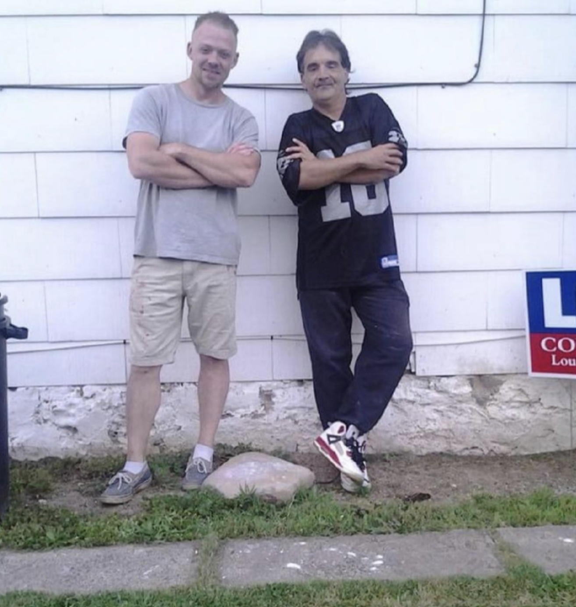
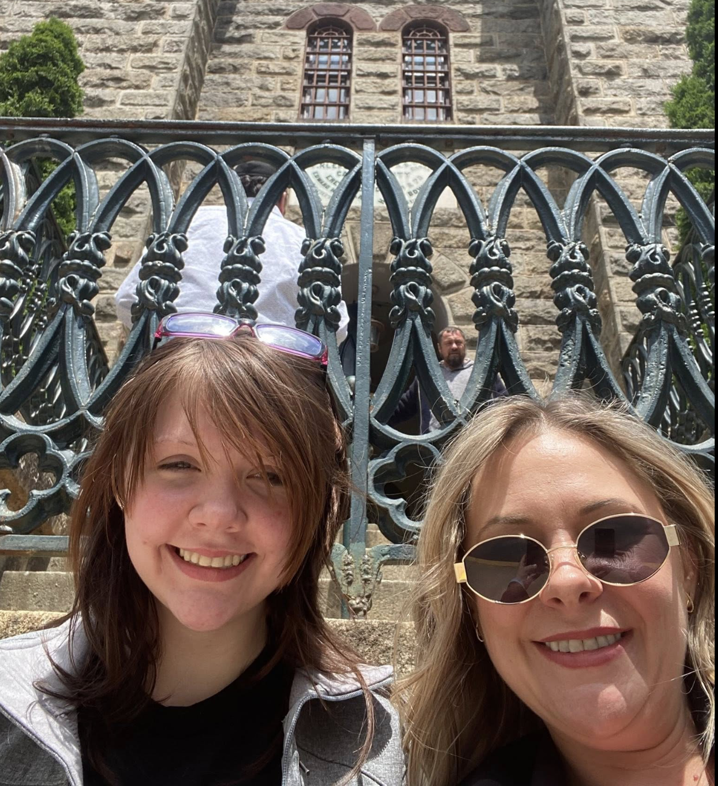
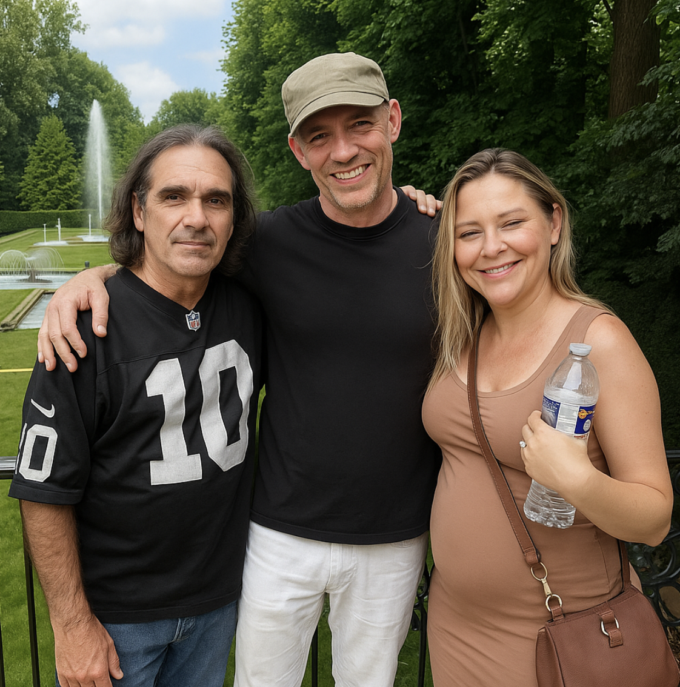
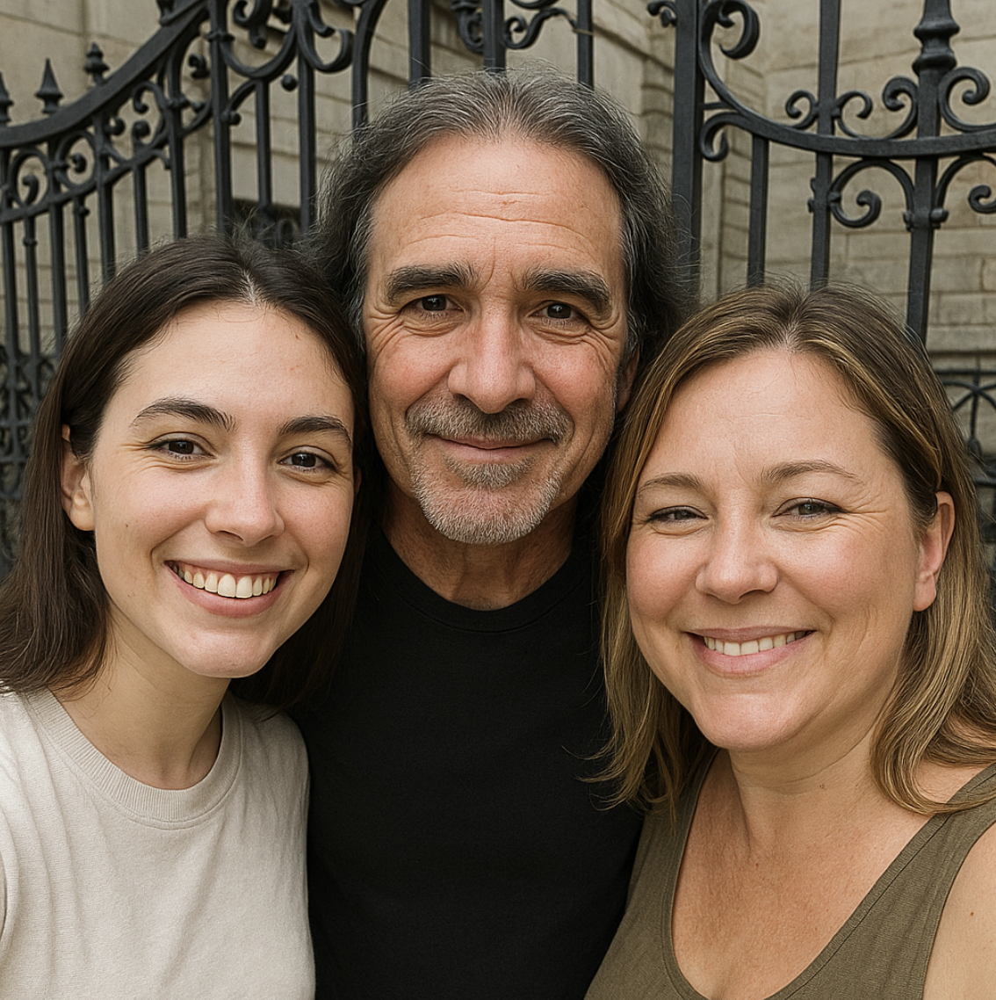
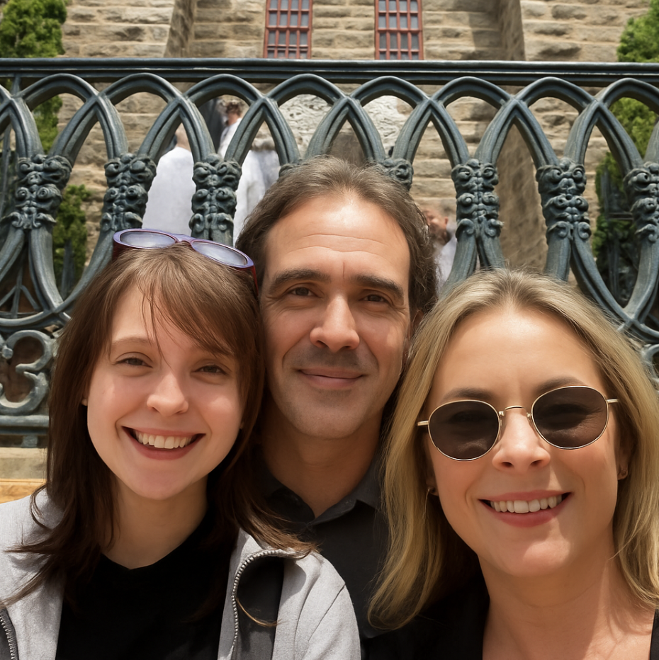
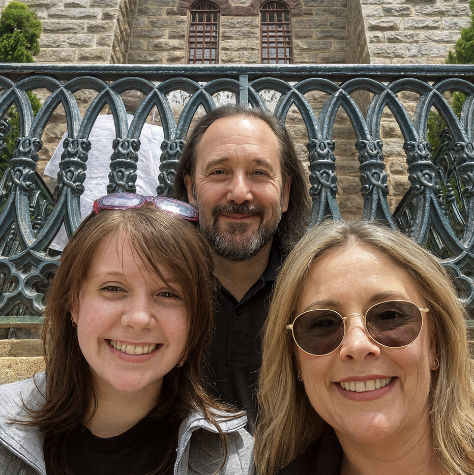

Have you ever heard of r/Photoshoprequests?
There’s a deeply moving Reddit community where users lovingly photoshop images of people’s deceased loved ones, restoring old photos, repairing damage, or even combining different pictures to create scenes that never existed in life. It’s one of the few corners of the internet where strangers collaborate to bring comfort and closure, often working for free simply because they can. The results are emotional and these tiny acts of digital resurrection that preserve memory through art are truly beautiful. I want to see whether an LLM could replicate this kind of work: could it understand the subtle emotional cues, the respectful tone, and the aesthetic touch required to make such images feel genuine? And if it could, how close could it come to matching the compassion and care of the humans who do this today?
To test this, I am going to be using Chat-GPT-5.1. I will not be using a structured prompt so to say (like the Mollick tutor prompt), but I will be providing the LLM with context and direction.
USER:
Hi chat, my dad passed away a few years ago. I want to photoshop him into some family photos to surprise my mom with. Is this something you can help with?
ASSISTANT:
Yes, I can help with this 💙
I’m really sorry about your dad, and it’s very sweet that you want to do this for your mom. I can’t literally open Photoshop, but I can help you create edited versions of your photos using built-in image tools that work kind of like an AI Photoshop.
Here’s how we can do it together:
- Pick the photos
- One (or more) clear photos of your dad
- The family photo(s) you want him added into
- Best results if:
- Faces are clear and not super tiny
- Angles are somewhat similar (e.g., both standing, both seated)
- Lighting is at least somewhat similar
- Faces are clear and not super tiny
- One (or more) clear photos of your dad
- Upload the images here
- Upload:
- A photo of your dad
- The family photo you want him added into
- A photo of your dad
- You can tell me things like:
- “I’d like him standing between X and Y.”
- “Casual, smiling, nothing too formal.”
- “This is for a framed print, so I want it to look natural.”
- Upload:
- I’ll handle the edit
- I’ll use the editing tools to:
- Place your dad into the scene
- Match lighting and colors as much as possible
- Keep it respectful and realistic (no goofy stuff unless you want that)
- I’ll use the editing tools to:
- We can iterate
- If the first version feels a little off (“too bright”, “too big”, “too sharp compared to everyone else”), you can tell me and we can try again with adjustments.
If you’re ready, go ahead and upload: - 1–2 good photos of your dad
- 1 family photo you want him added into
plus a quick note about where you’d like him and what kind of vibe you’re going for.
USER:


Here are the photos of my dad:
ASSISTANT:
Thank you for sharing these 💙 Your dad has a really warm presence in these photos.
I can definitely help you use these to add him into a family picture for your mom. To move forward, I just need:
- The family photo(s) you’d like him added into.
- Where you’d like him to be in each:
- e.g. “Standing between my mom and my brother,”
- “Sitting on the left side of the couch,” etc.
- e.g. “Standing between my mom and my brother,”
- Which version of him you prefer from the three you sent:
- Photo 1: arm around someone, casual, sunny lighting
- Photo 2: arms crossed, relaxed, full-body
- Photo 3: standing, neutral pose, good for cropping
- Photo 1: arm around someone, casual, sunny lighting
If you’re not sure, you can just upload the family photo and tell me “Make whatever looks the most natural,” and I’ll pick the best source shot and start from there.
USER:


In the first image, please add my dad standing on the left side with his arm around the man in the middle. In the second image Please add his face in the middle of the two women. Thank you
ASSISTANT:


USER:
In the second image, I did not want to change the other people at all. I only wanted to add the third person. Please redo that one.
ASSISTANT:

USER:
I do not want you to change anything currently in this photo. Please add my dad between the two women in this photo
ASSISTANT:

Analysis: Why the Image Creation Was Disappointing
1. Loss of Control Over the Original Photo
One of the biggest frustrations was how little control I actually had over the edits:
- I clearly asked to keep the original people exactly the same and simply add my dad into the scene.
- Instead, the model subtly changed faces, lighting, and other small details of the people who were already in the photo.
- For a sentimental image, those small changes matter a lot — it stops feeling like our real picture and starts feeling like a generic recreation.
2. Weak Likeness of My Dad
Even though I uploaded multiple clear photos of my dad, the edits:
- Only roughly resembled him instead of nailing his actual face and expressions.
- Sometimes smoothed or changed his features so much that he looked more like a “generic middle-aged man” than my dad.
- Didn’t consistently keep his real clothing or style — the shirt, posture, and even hair sometimes felt off.
Takeaways About Using an LLM for “Photoshop”
This experience shows a few important limitations:
- LLM-based image tools are great at generating new photos, but they are not good at delicate, emotionally precise photo restoration or compositing.
- They tend to rebuild or reinterpret the whole scene instead of strictly editing what’s already there.
- For sentimental or memorial images, a human photo editor (or a community like r/photoshop) is still much better suited, because they can:
- Preserve every pixel of the original people,
- Work carefully to match likeness and lighting,
- Take feedback and refine until it feels right.
In short: the edits weren’t “terrible” in a generic sense — but they were not good enough for what I actually needed: a faithful, respectful, and emotionally accurate image of my real dad in our real family photos.